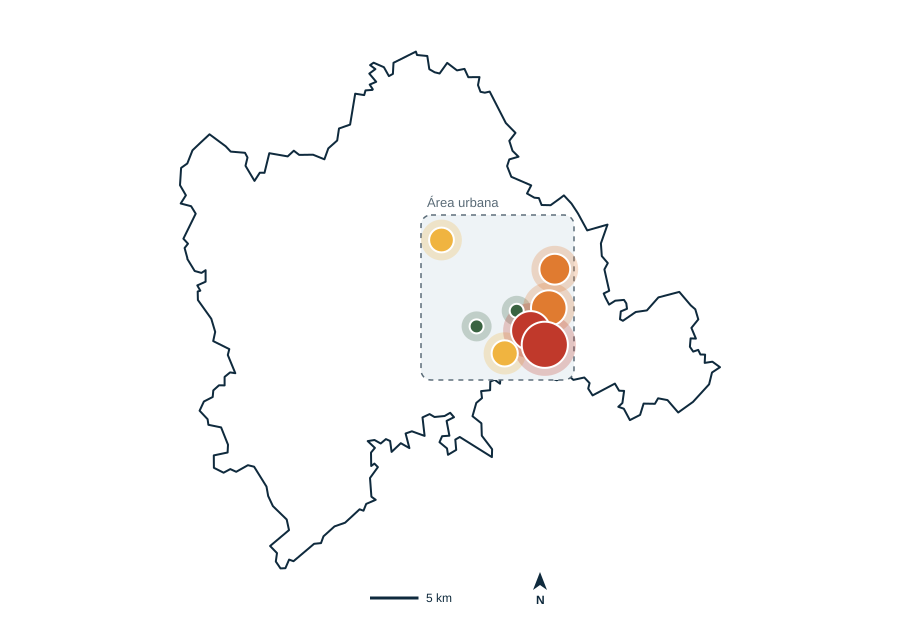
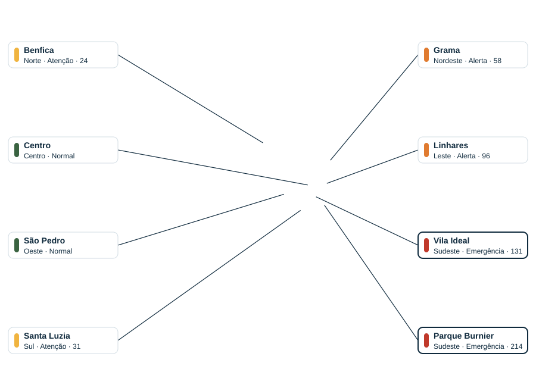

Painel da Defesa Civil · Juiz de Fora
Regiões em alerta ou emergência3 de 7
Pessoas alertadas18.420
Confirmaram segurança3.115
Sem confirmação em área de risco642
Vigias acionados37
Mapa de calor · Juiz de Fora
Cor = nível de risco · tamanho = pessoas sem confirmação

Normal
Atenção
Alerta
Emergência
Contorno oficial do município (IBGE) · posição dos bairros aproximada
Onde agir primeiro
Bairros com mais pessoas sem confirmar segurança-
Parque Burnier
Sudeste · Emergência · 214 sem confirmação · 9 vigias -
Vila Ideal
Sudeste · Emergência · 131 sem confirmação · 6 vigias -
Linhares
Leste · Alerta · 96 sem confirmação · 4 vigias -
Grama
Nordeste · Alerta · 58 sem confirmação · 3 vigias
Nenhum bairro com esse nível precisa de ação agora.
Abrigos abertos
Abrigo 1 · Sudeste180 de 250
Abrigo 2 · Leste95 de 200
Abrigo 3 · Nordeste40 de 120
Relatos de moradores para validar
Rachadura na encosta
Parque Burnier · com foto · há 12 min
Parque Burnier · com foto · há 12 min
Bueiro entupido
Linhares · com foto · há 25 min
Linhares · com foto · há 25 min
Árvore caída
Grama · com foto · há 40 min
Grama · com foto · há 40 min
Nenhum relato esperando validação.
Entrega do alerta por canal
Push no app12.300
SMS5.200
Ligação por voz920
Avisados por vigias148 vizinhos